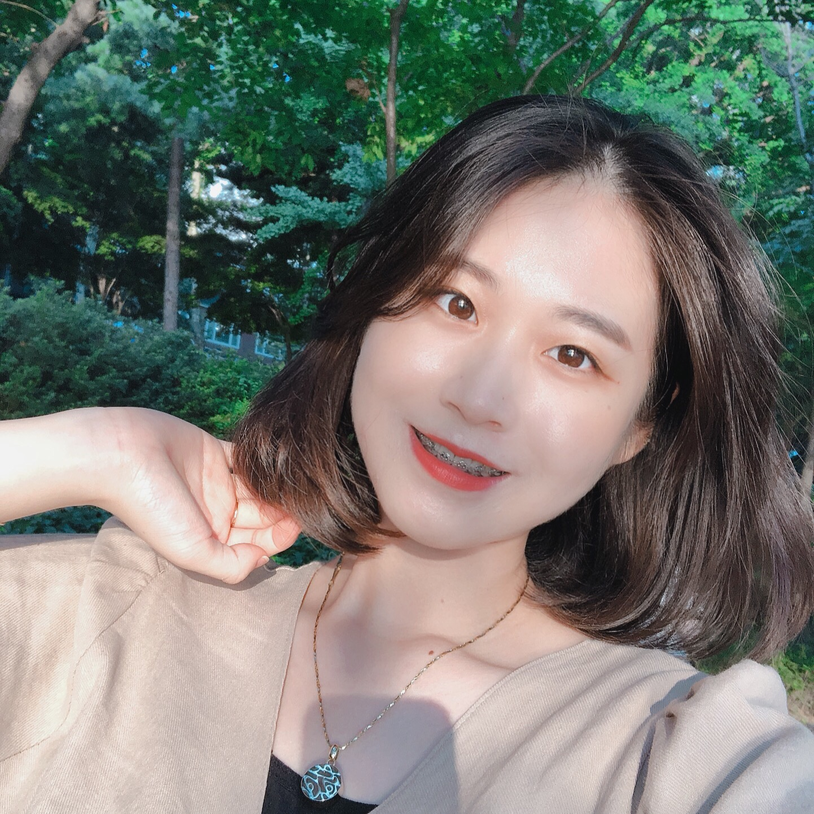

정 다 슬
Web Publisher- Birth.
- 1997.01.03
- Call.
- 010.5915.6408
- Email.
- jds6408@naver.com
- Skills(Develop)
- - HTML5, CSS3, JavaScript, jQuery, Ajax, php(in clude) -
- Skills(Design)
- - Adobe Photoshop, illustrator -

도로시 컴퍼니
PC
웹 제작
사이트 기획의도: 텍스트로 충분히 작성 가능한
정보들을 img로 처리를 하였고, 사진이 해상도에
맞지 않고 늘어나 있어서 기업형 사이트를
구축하였습니다.
- 제작 기간
- 2019. 02. 26 ~ 03. 18 (약 3주)
- 제작 스킬
- Adobe Photoshop, Illustrator
- HTML5/CSS3, Javascript, jQuery , Ajax(Json)
- , php(in clude)
- W3C 웹표준 마크업 검사, 웹접근성검사(K-WAH), 대표 사이트별 테스트 완료

도로시 컴퍼니
MOBILE
웹 제작
사이트 기획의도: 정보가 많아서 가독성이 떨어지며,
사진이 해상도에 맞지 않고 늘어나 있어서
모바일 사이트를 구축하였습니다.
- 제작 기간
- 2019. 03. 25 ~ 04. 03 (약 2주)
- 제작 스킬
- Adobe Photoshop, Illustrator
- HTML5/CSS3, Javascript, jQuery
- CSS3(media query)와 스크립트를 이용한 기기별 해상도 서비스
W3C 웹표준 마크업 검사, 웹접근성검사(K-WAH), 대표 기기별 테스트 완료

Boss Baby
MEDIA
웹 제작
사이트 기획의도: 애니메이션 "Boss Baby"를 주제로
한 사이트로써, 다양한 디바이스에서 폭 넓게
이용할 수 있도록,
반응형 웹을 구축하였습니다.
- 제작 기간
- 2019. 04. 06 ~ 04. 13 (약 1주)
- 제작 스킬
- Adobe Photoshop, Illustrator
- HTML5/CSS3, Javascript, jQuery
- CSS3(media query)와 스크립트를 이용한
디바이스/해상도별 반응형 UI 구현
W3C 웹표준 마크업 검사, 웹접근성검사(K-WAH),
대표 기기별 테스트 완료


Vivienne Westwood
Word Press
웹 제작
사이트 기획의도 : 평소 관심있던 브랜드를 워드프레스
사이트에서 접목해서 컨셉을잡고 디자인을 해보고싶어서
진행했습니다.
- 제작 기간
- 2019. 04. 15 ~ 04. 18 (약 4일)
- 제작 스킬
- Adobe Photoshop, Illustrator
- HTML5/CSS3
- wordpress 이용한 웹사이트 구현